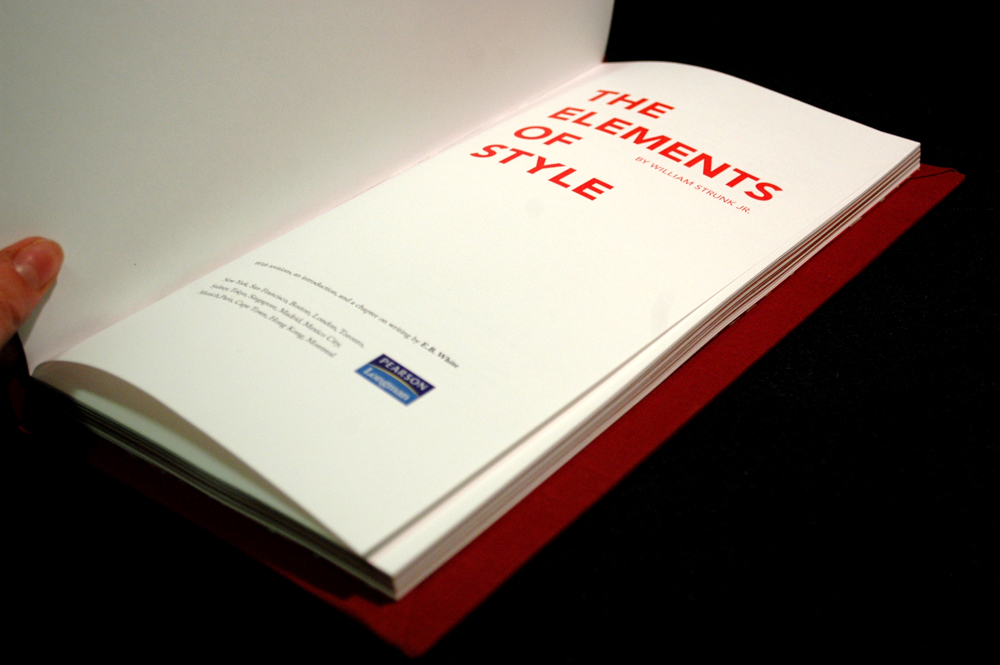
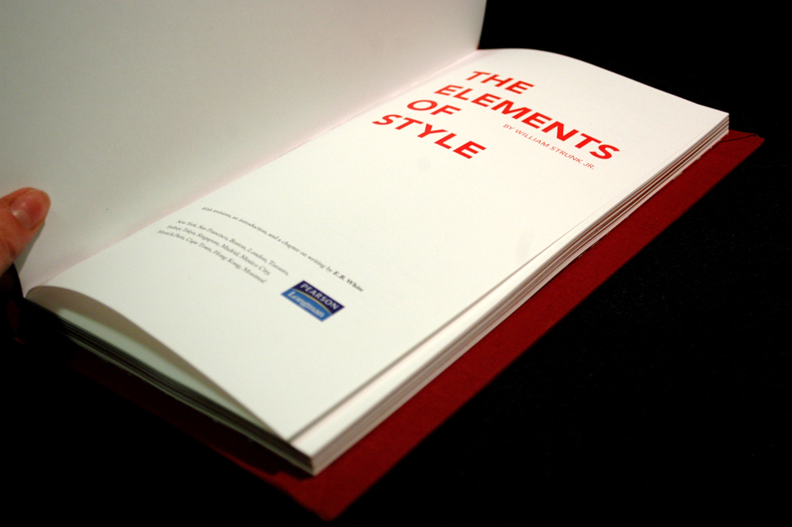
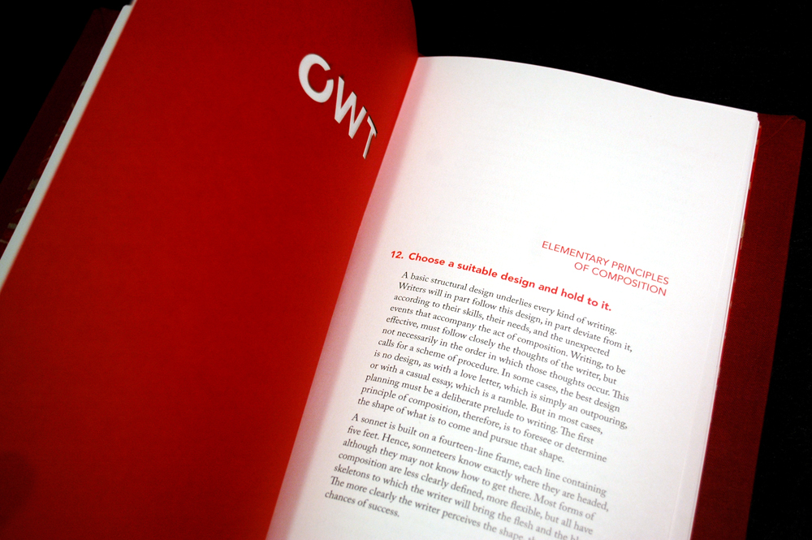
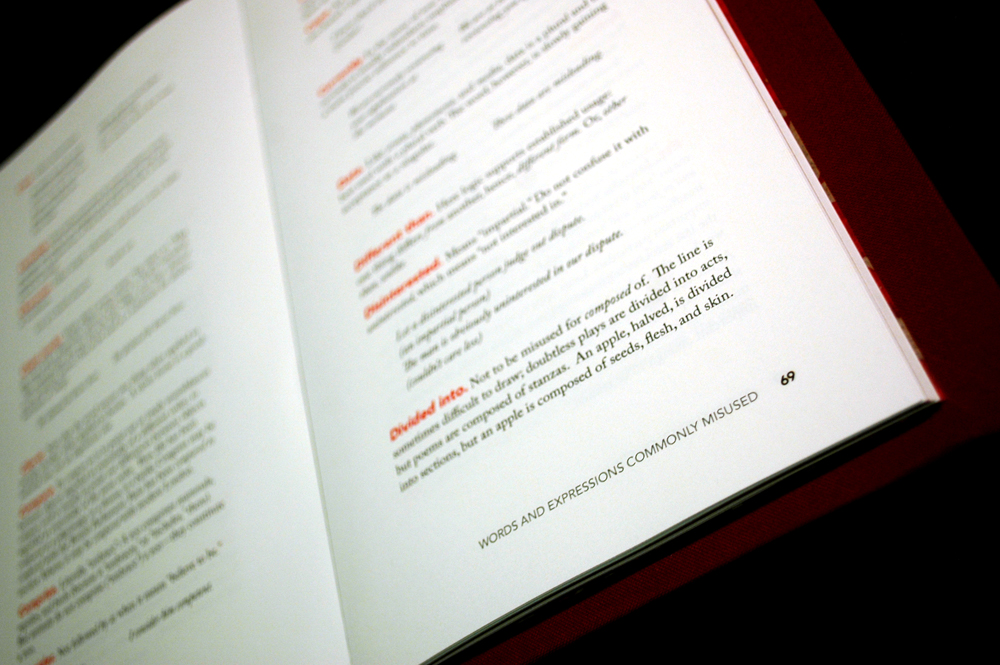
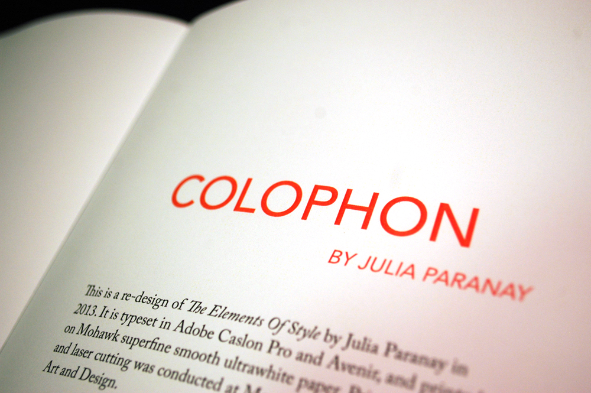
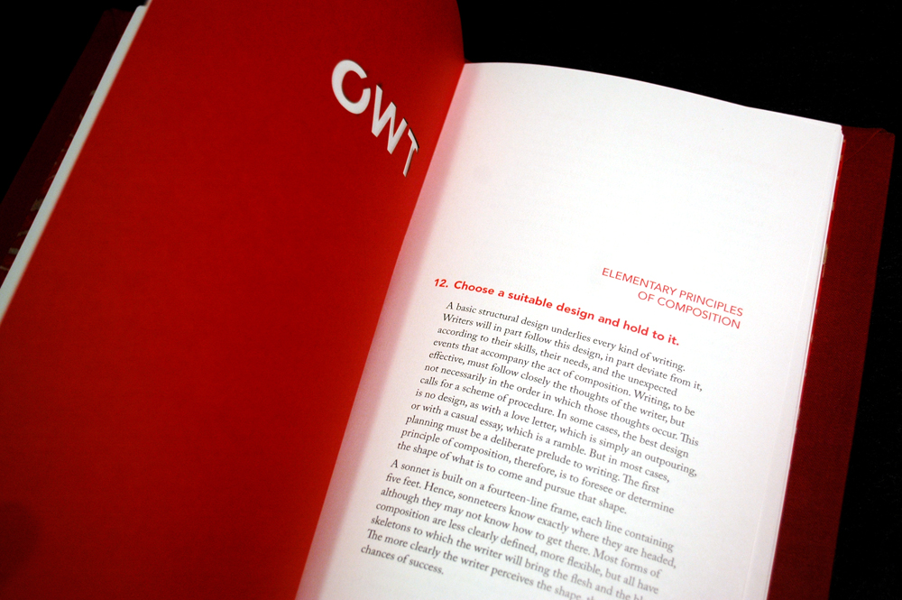
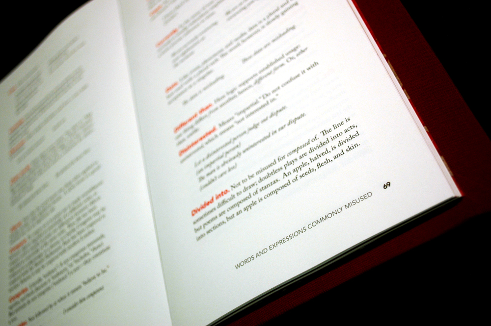
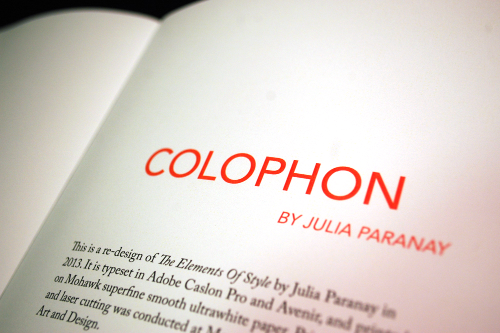

Project Information
Information Architecture Visual Database MassArt 2013 Junior Year
Information Architecture Visual Database MassArt 2013 Junior Year
I visually organized 7 categories for the first 100 movies I could remember.

 

 




